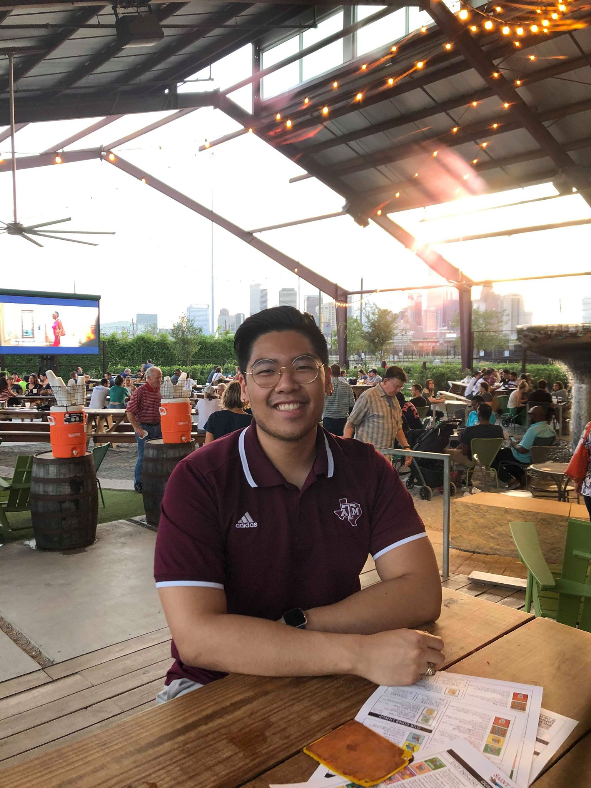

About Me!

Welcome to my first web development page! I come from a non-traditional background for coding as I have a degree in Nutrition. Currently, I am taking a coding class to better my skill set for future employers and to hopefully have a better job outlook. Choosing this path was a full 180 degree turn as I have no background in this subject. I am willing to learn and master all topic the best I can to excel in this newfound career.
A little bit about me: I was not born here in Houston, nor in the states. I come from Quezon City, Philippines and I moved here to the U.S. in 2003 when I was 8 years old. My parents moved here to give a better life to their children and there are currently 4 of us in total. I strive to have the same integrity and patience as my parents to be successful. I hope that one day I can spoil them with everything that they need, since they deserve everything.
When I am not in class or at work, I like to workout at my local gym or play video games at my home. I am versatile in any type of video game, whether it would be RPG’s, MOBA’s Open world, or Single player. One of the many things that interest me in coding is maybe putting my career path into game development. I might find something else that I like as I continue my journey, but that information will most definitely be updated in my portfolio when the time comes.